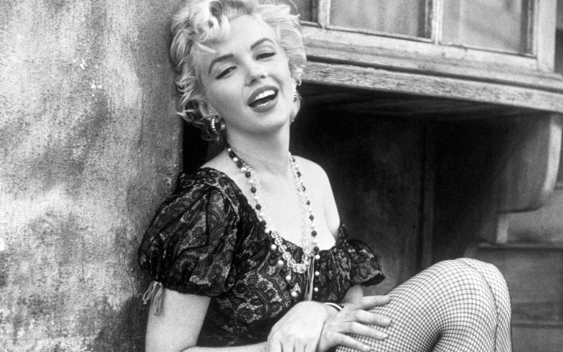

Переход на 1 тему Переход на 3 тему
Переход на 2 тему Переход на 4 тему
«До того, как мы захотели снимать, мы хотели увидеть.»Жан-Люк Годар (франко-швейцарский кинорежиссёр, кинокритик, актёр, сценарист, монтажёр и кинопродюсер, стоявший у истоков французской новой волны в кинематографе.)
Кинематограф был изобретен в XIX веке и стал крайне популярен в XX веке. В понятие кинематографа входят киноискусство — вид современного изобразительного искусства, произведения которого создаются при помощи движущихся изображений, и киноиндустрия (кинопромышленность) — отрасль экономики, производящая кинофильмы, спецэффекты для кинофильмов, мультипликацию и демонстрирующая эти произведения для зрителей.
Произведения киноискусства создаются при помощи кинотехники. Изучением кинематографа занимается наука киноведение.
В истории кино принято выделять три определяющих эры. Они достаточно подробно описаны ниже.
Исторически кинематограф появился в результате решения задачи по закреплению на материальном носителе изображения непрерывного движения объектов и проекции этого движения на экран. Для решения этой задачи необходимо было создание сразу нескольких технических изобретений кинотехники.: гибкой светочувствительной пленки, аппарата хронофотографической съемки, проектора быстро сменяющихся изображений. В 1895-1896 годах были изобретены аппараты, сочетающие в себе все основные элементы кинематографа: во Франции - «синематограф» братьев Л. и О. Люмьер (1895); в Англии – «аниматограф» Р.У. Пола (1896); в России – «хронофотограф» А. Самарского (1896) и «стробограф» И. Акимова (1896); в США – «витаскоп» Т. Армата (1896).
Начало распространения кинематографа было положено съемкой и публичной демонстрацией первых короткометражных фильмов , прошедшей в течении 1896-1897 годов; Подобные демонстрации короткометражных фильмов были произведены во всех мировых столицах. В России первые показы были организованы в апреле 1896 года в Москве и Санкт-Петербурге, а затем на Всероссийской ярмарке в Нижнем Новгороде. Тогда же были проведены первые отечественные любительские киносъемки (В. Сашин, А. Федецкий, С. Макаров и др.).
Первые короткометражные фильмы (15—20 метров, примерно 1,5 минуты демонстрации) были по большей части документальные, однако уже в комедийной инсценировке братьев Люмьер «Политый поливальщик» отражаются тенденции зарождения игрового кино. Небольшая длина первых фильмов была обусловлена техническим несовершенством киноаппаратуры, тем не менее, уже к 1900-м годам длина кинокартин увеличилась до 200—300 метров (15—20 минут демонстрации).
Совершенствование съемочной и проекционной техники способствовало дальнейшему увеличению длины фильмов, качественному и количественному увеличению художественных приемов съемки, актерской игры и режиссуры. А широкое распространение кинематографа и популярность кинематографа обеспечили его экономическую выгодность, что, однако, не могло не сказаться на художественной ценности снимаемых кинокартин.
В этот период с усложнением и удлинением сюжета фильмов начинают формироваться жанры кинематографа, оформляется их художественное своеобразие, создается специфический для каждого жанра набор изобразительных приемов. Наивысшего своего расцвета «немое» кино достигает к 20-м годам, когда оно уже вполне оформляется как самостоятельный вид искусства обладающий своими собственными художественными средствами.
Еще до начала XX века Томас Эдисон пытался синхронизировать кинескоп c фонографом, но потерпел неудачу. Однако в последствии Уильям Диксон - соавтор Эдисона утверждал, что ему уже в 1889 году удалось создать кинетофонограф - прибор, воспроизводивший звук и изображение одновременно. Однако не существует никаких доказательств, подтверждающих его слова.
В ранний период кинематографа звуковое кино пытались создать во множестве стран, но столкнулись с двумя основными проблемами: трудность в синхронизации изображения и звука и недостаточная громкость последнего. Первая проблема была решена путем записи и звука, и изображения на одном и том же носителе, но для решения второй проблемы требовалось изобретение усилителя низкой частоты, что произошло лишь в 1912 году, когда киноязык развился настолько, что отсутствие звука уже не воспринималось как серьезный недостаток.
Уже в 1926 году Warner Brothers, приобрев патент на новейшее кинозвуковое изобретение, выпустила несколько звуковых фильмов, состоящих в основном из музыкальных номеров, но особого успеха у зрителей они не имели. Успех пришел только с фильмом "Певец джаза", в котором кроме музыкальных номеров Эла Джолсона присутствовали и его короткие реплики. 6 октября 1927 года — день премьеры "Певца Джаза" — принято считать днем рождения звукового кино.
В настоящее же время существуют очень изощренные системы звукового сопровождения кино. Число отдельных звуковых каналов доходит до 7, а в экзотических системах даже до 12. Разумеется, все это призвано усилить глубину погружения зрителя в атмосферу просматриваемого фильма.
Представляем перечень необходимых для съёмки фильма специалистов и команд:
Тут текст будет под строчкой -> Текст Строка
Тут текст будет над строчкой -> Текст Строка
Тут есть слово с ашибкой
Картинки:
